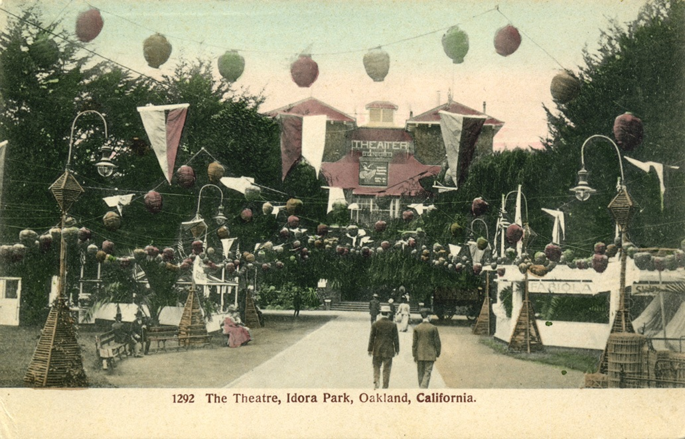
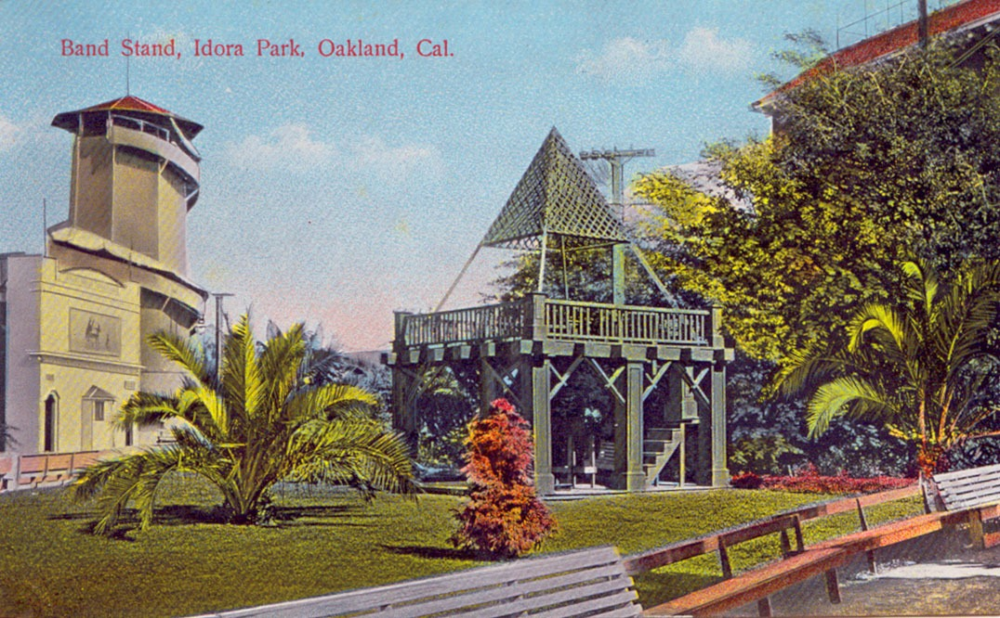
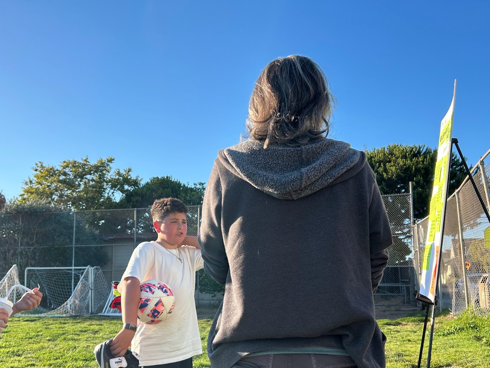
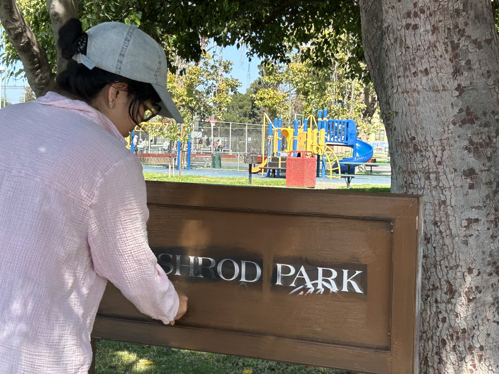
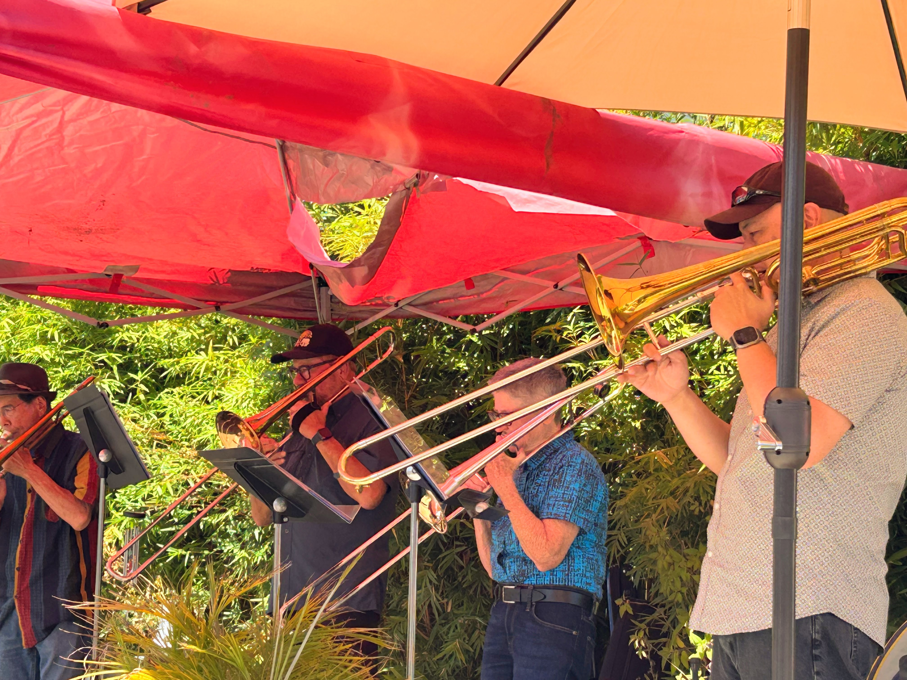

September 2025
WE HAD AN AMUSEMENT PARK?
It’s true! The area between 56th and 58th St (Idora Park / where the cute little storybook houses are) used to be a huge amusement park with rides like the “Barrel of Fun” and a Pennsylvania coal mining exhibit . Over 2M people would visit each year.
It was eventually razed to the ground in 1929, hit by economic woes and the removal of streetcar lines in the area. (More pictures are online @ www.theflyer.org.)
Read more: LocalWiki



EVEN MORE PARK CONVERSATIONS!
Sometime in the middle of last month I dragged a couple chairs, a box of pizza, and some watermelon to the park to hang out and talk about the park! I got a lot of responses on the survey (responses are here), but I had truly zero idea how many people would show up.
Thankfully, I was not alone by any means. Three neighbors (most of whom had never met before) sat and chatted for a few hours about our personal histories, our local environment, the abandoned school building, and more. A couple other neighbors in the park popped by to join in every now and then.
From both that lovely conversation and the survey results (left QR code), there’s a lot we could do:
- There is a lot that we all agree would improve the park right now, like a better playground or just cleaning up trash. K & J are thinking about hosting a cleanup day soon; send me a note if you’re into that and let’s make it happen!
- We have to treat the park's environment with care. Did you know the park is an important roosting site for some local birds? Or that J has been patching up the parts of the field that have eroded away? I did not!
- Dogs are loved, but we agreed the park is for people first and foremost. We can do better to make sure the park is clean, kids are safe, and athletes can practice undisturbed. Good ideas came up to manage that better.
- The abandoned building (a preschool, apparently) on the NE corner is an opportunity. It would be complicated and expensive to clean it up and transfer the property, but that site could be much more.
Anyway, lots to talk about! The councilmember’s office is interested in helping improve the park too, so I’m thinking of organizing another park conversation. If you’re interested, please subscribe through the usual link.
NEIGHBORHOOD SNAPSHOTS
Just a few wholesome snapshots in the neighborhood from the last few days:
Lovely neighbor decided to take it upon themselves to repaint the sign! Thank you! 🌸
Trombone concert at Nick’s Pizza. Apparently the band (Trombonga) are longtime fans of Nick's!